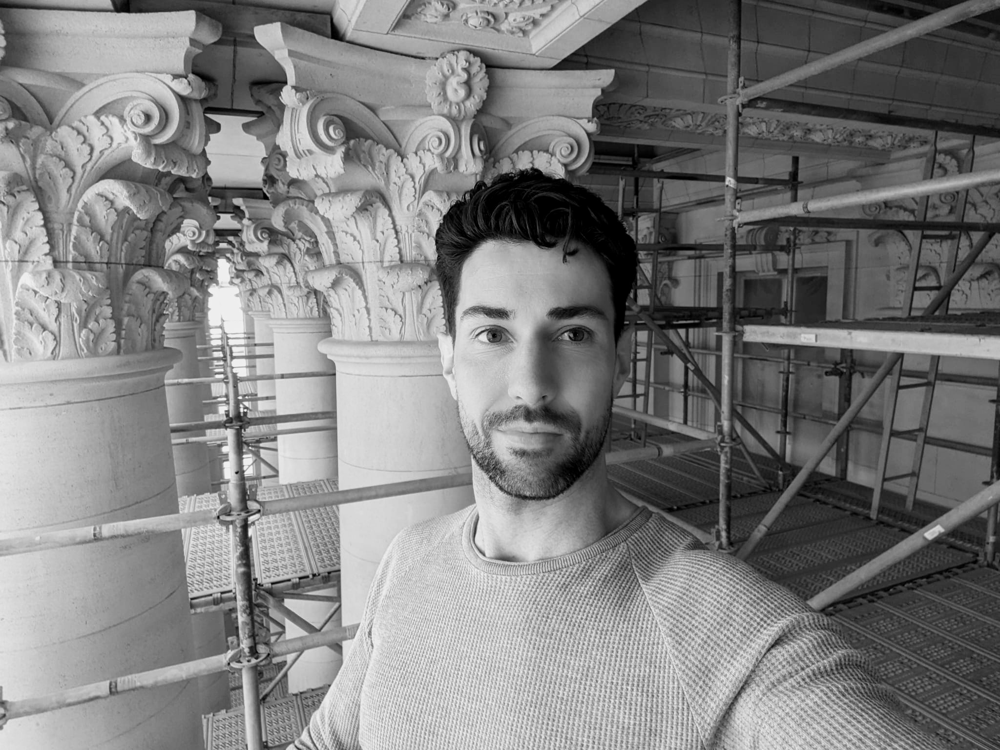

Hier ben ik bezig met het uitvoeren van metingen voor de gevelrenovatiewerken van het Koninklijk Paleis in Brussel. Dit is een van de prachtige projecten waar ik onlangs aan heb mogen bijdragen. Daarnaast heb ik ook mogen bijdragen bij de renovatie van de Kanselarij van de Eerste Minister, de herinrichting van het Koninklijk Museum voor Schone Kunsten Antwerpen (KMSKA), de restauratie van het Oud Gerechtshof in Antwerpen, en de bouw van de Google Datacenters in Saint-Ghislain.

Graduaat Programmeren Thomas More
Ik ben een enthousiaste programmeur met een sterke affiniteit voor computers en een scherp oog voor detail. Mijn nieuwsgierigheid, creativiteit en logisch denkvermogen hebben me gemotiveerd om een avondopleiding te volgen waarin ik alles heb geleerd over coderen, programmeren en gestructureerd werken met de programmeertaal C# op het .NET-platform. Tijdens deze opleiding heb ik actuele lessen gevolgd, bedrijfsbezoeken bijgewoond en lezingen bijgewoond van experts uit het werkveld om op de hoogte te blijven van de nieuwste trends. Met dit diploma ben ik klaar om te gedijen als een field engineer, software engineer of application developer. Mijn opleiding benadrukte projectwerk en stages, wat mijn praktische ervaring verrijkte, en ik ben ervan overtuigd dat ik mijn kennis en vaardigheden kan toepassen in uitdagende projecten. Ik ben vastbesloten om mijn passie voor programmeren te benutten en bedrijven te ondersteunen bij hun digitale behoeften, aangezien de vraag naar digitale experts blijft groeien.
Werkervaring
Met meer dan 13 jaar ervaring in verschillende functies binnen de bouw- en projectmanagementsector, heb ik een bewezen staat van dienst in het succesvol beheren van diverse schilder- en vloerbekledingsprojecten. Tijdens mijn tijd als projectleider bij Van Gompel NV stond ik aan het roer van het gehele projectmanagementproces, waarbij ik verantwoordelijk was voor projectplanning, team- en leverancierscoördinatie, budgetbeheer en kwaliteitsborging. Dit resulteerde in het behalen van uitstekende resultaten en tevreden klanten, zowel in de projectmarkt als in de particuliere sector.
Mijn loopbaan begon als werkvoorbereider bij Van Gompel NV, waar ik verantwoordelijk was voor de nauwkeurige planning van projecten, het selecteren van materialen en het zorgen voor de juiste voorbereiding van het werk. Deze rol diende als de solide basis waarop ik mijn latere carrière als projectleider heb opgebouwd.
Mijn passie voor efficiënt projectmanagement en mijn toewijding aan het leveren van hoogwaardige resultaten hebben me in staat gesteld om mijn ervaring en vaardigheden te ontwikkelen en te benutten om complexe projecten met succes af te ronden. Ik ben altijd op zoek naar nieuwe uitdagingen en mogelijkheden om mijn expertise toe te passen en bij te dragen aan het succes van toekomstige projecten.
Talenkennis
- Nederlands
- Engels
- Frans